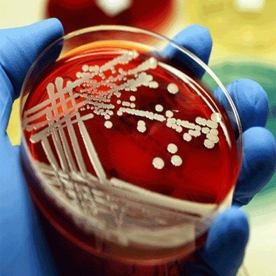
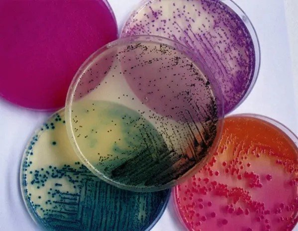
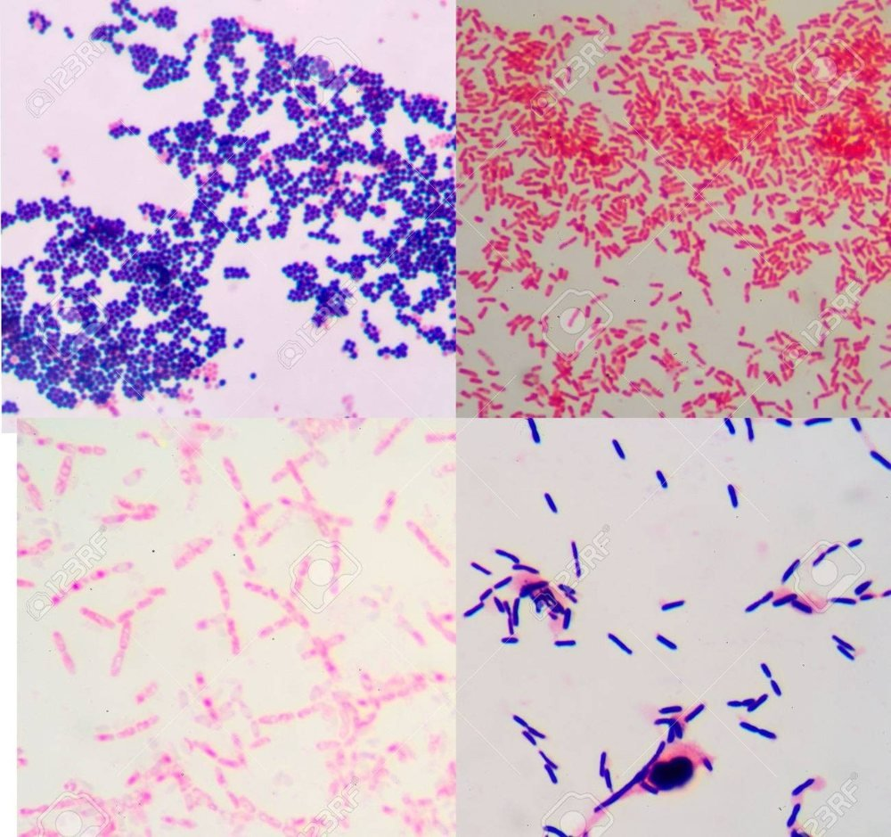
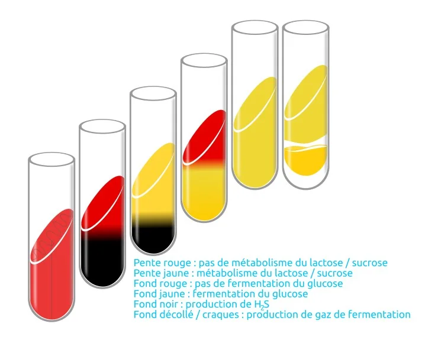
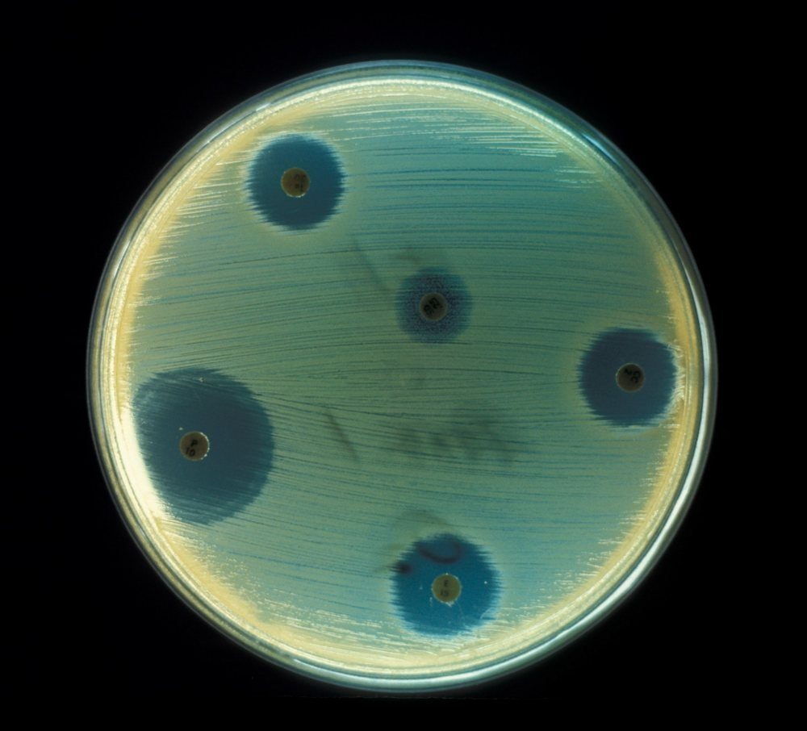
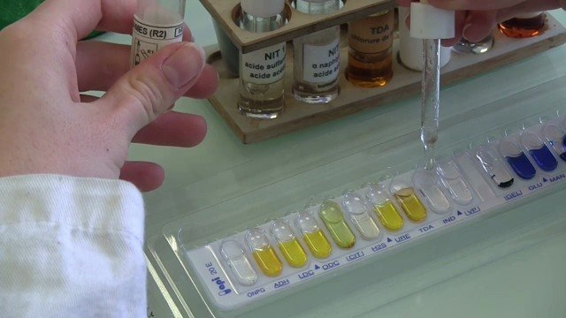

Document préparé à partir des diapositives du cours « La qualité » et de documents officiels du Canada et du Québec (liens dans le texte).
Comment utiliser ces notes — Au Cours 7, on a vu comment prélever un échantillon et lire une norme. Ici, on répond à deux questions simples : que cherche-t-on dans l’échantillon? (les organismes indicateurs) et comment sait-on de quel microorganisme il s’agit? (l’identification). On vise à reconnaître les idées, pas à faire les analyses soi-même. Les codes des méthodes officielles utiles sont dans ces notes, avec le document d’où ils viennent. Les activités 8.1 (les indicateurs) et 8.2 (identifier un microorganisme) du site accompagnent ces notes.
Objectifs d’apprentissage proposés
- Expliquer pourquoi on cherche des organismes indicateurs plutôt que tous les pathogènes.
- Dire ce que signale chaque grand indicateur.
- Décrire les grandes étapes pour identifier un microorganisme : culture, microscope, tests simples.
- Distinguer « compter » et « chercher la présence » d’un microorganisme.
- Dire qui analyse (laboratoire interne ou externe accrédité) et qui décide du sort du lot après un résultat.
- Refaire le calcul d’un résultat en UFC/g (rappel du Cours 7 et des labos 5 à 7).
- Nommer la méthode officielle (son code) pour les principaux groupes de microorganismes.
PARTIE 1 — Pourquoi des organismes indicateurs?
1.1 On ne peut pas tout chercher
Idéalement, on chercherait tous les microorganismes dangereux dans tous les aliments. C’est impossible : il y en a trop de sortes, ils sont souvent très rares dans l’aliment et ils sont difficiles à cultiver rapidement.

1.2 Qu’est-ce qu’un indicateur?
On cherche donc des organismes indicateurs : des microorganismes faciles à détecter dont la présence signale que quelque chose s’est mal passé.
C’est comme la fumée : elle ne prouve pas qu’il y a un incendie, mais elle dit « va voir ».
À retenir — Un indicateur n’est pas une preuve que le pathogène est là. C’est un signal : l’hygiène, le froid ou la cuisson n’ont pas fonctionné comme prévu.
PARTIE 2 — Les principaux indicateurs
| Indicateur | Ce qu’il nous dit | Comment on l’analyse |
|---|---|---|
| Bactéries aérobies (qui poussent avec l’oxygène) | Hygiène générale : propreté, chaîne du froid, conservation | On compte : MFHPB-18 |
| Coliformes, E. coli, entérocoques | Contamination par des matières fécales | On compte : MFHPB-19 (coliformes et E. coli) |
| B. cereus et C. perfringens | Problème de cuisson, de refroidissement ou de réchauffage | C. perfringens : on compte (MFHPB-23). B. cereus : pas de méthode dédiée dans le volume 2 |
| S. aureus | Hygiène des mains du manipulateur | On compte : MFHPB-21 |
| Levures et moisissures | Conservation trop longue; aliments acides ou secs | On compte : MFHPB-22 |
2.1 Hygiène générale
On compte toutes les bactéries qui poussent en présence d’oxygène à température moyenne. Si le nombre est élevé, c’est que l’hygiène, le froid ou la conservation n’ont pas été maîtrisés. On ne sait pas quelle bactérie est là, mais on sait que ça cloche.
2.2 Contamination par des matières fécales
Les microorganismes dangereux de l’intestin (comme Salmonella) passent par les matières fécales. Plutôt que de les chercher un par un, on cherche des bactéries qui vivent dans l’intestin et qui sont faciles à compter : les coliformes (des entérobactéries, bacilles Gram-négatif du Cours 4) et surtout E. coli. On les cherche beaucoup dans l’eau. Leur présence signale une contamination fécale, donc un risque.
Les entérocoques sont d’autres bactéries de l’intestin qui signalent aussi une contamination fécale; on en parle moins. La plupart des E. coli sont inoffensifs, mais certaines souches (comme E. coli O157:H7) sont dangereuses.
2.3 Cuisson, refroidissement et mains
B. cereus (le « riz réchauffé ») et C. perfringens vivent dans le sol. Leurs spores (formes de résistance) survivent à la cuisson. Si on laisse refroidir lentement un plat cuit, ces bactéries se multiplient. Leur présence signale donc un problème de température.
Trois moments comptent. La cuisson tue les bactéries ordinaires, mais pas les spores. Le refroidissement est le moment le plus risqué : un plat qui reste tiède, par exemple le centre d’un gros bac de riz ou de sauce, laisse les spores se réveiller et les bactéries se multiplier. Le réchauffage ne répare rien si le plat a mal refroidi : s’il n’est pas bien chauffé, les bactéries qui se sont multipliées ne sont pas détruites. Au Canada, on recommande de garder les aliments chauds à 60 °C ou plus et les aliments froids à 4 °C ou moins : entre les deux, les bactéries peuvent croître (Agence de la santé publique du Canada).
S. aureus est détruit par la chaleur, mais il produit une toxine qui résiste à la cuisson. Sa présence dans un aliment cuit signale un défaut d’hygiène : mains mal lavées, cheveux non couverts.
2.4 Conservation
Les levures et moisissures (Cours 5) poussent dans des aliments que les bactéries n’aiment pas : très acides ou très secs. Beaucoup d’entre elles signalent un aliment gardé trop longtemps.
2.5 Lire un résultat d’indicateur
Un indicateur se lit comme une norme (Cours 7, section 5.4) : on compare le chiffre aux deux limites. Prenons les bactéries aérobies dans une crème glacée, avec une limite basse de 100 000 UFC/g et une limite maximale de 1 000 000 UFC/g :
- 50 000 UFC/g : sous la limite basse, le résultat est acceptable.
- 400 000 UFC/g : entre les deux limites, le résultat est médiocre : c’est un avertissement, pas encore un rejet.
- 2 000 000 UFC/g : au-dessus de la limite maximale, le résultat est inacceptable : on cherche ce qui a mal fonctionné (hygiène, froid, durée de conservation).
Le chiffre ne dit pas quelle bactérie est en cause. Selon l’indicateur, il oriente vers la bonne vérification : E. coli élevé, on vérifie l’eau et l’hygiène des mains; C. perfringens élevé, on vérifie le refroidissement; levures et moisissures élevées, on vérifie la durée de conservation.
PARTIE 3 — Identifier un microorganisme
3.1 Mettre en culture
On dépose l’échantillon sur un milieu de culture (un gel nutritif dans une boîte de Petri, Cours 4) et on le garde à la bonne température. Chaque microorganisme forme une colonie. Selon ce qu’on cherche, on choisit un milieu riche (pour tout détecter) ou un milieu sélectif (où seul le microorganisme recherché pousse, souvent avec une couleur particulière).

3.2 Observer
On regarde d’abord la colonie à l’œil nu (couleur, taille, forme). Puis on observe les cellules au microscope après une coloration : la coloration de Gram (Cours 4) montre si la bactérie est Gram-positif (violette) ou Gram-négatif (rose), et sa forme (coques, bacilles). La couleur dépend de la paroi de la bactérie.

3.3 Faire des tests simples
Pour aller plus loin, on teste ce que la bactérie sait faire : manger un sucre, produire du gaz, pousser avec ou sans oxygène, résister à un antibiotique. On peut faire plusieurs tests à la fois dans une galerie de petites cupules. Un seul test ne suffit presque jamais : c’est l’ensemble qui permet de nommer le microorganisme.



Sur les images : la galerie (celle du laboratoire 6) fait plusieurs tests à la fois et chaque cupule change de couleur selon ce que la bactérie fait. Le tube de gélose TSI renseigne sur les sucres utilisés : pente jaune = le lactose ou le saccharose est utilisé; fond jaune = le glucose est fermenté; fond noir = production de H₂S; gélose décollée ou craquée = production de gaz. Sur l’antibiogramme, plus la zone sans bactéries autour d’un disque est grande, plus l’antibiotique agit sur cette bactérie.
Les laboratoires utilisent aussi des tests rapides modernes, qui détectent l’ADN ou des protéines du microorganisme (la PCR repère un petit morceau d’ADN, l’ELISA repère des protéines). Ils sont plus rapides, mais demandent du matériel spécialisé. On ne les étudie pas en détail ici.
3.4 Les méthodes officielles
Pour que les résultats soient comparables d’un laboratoire à l’autre, on utilise des méthodes officielles. Santé Canada les rassemble dans un recueil, le Compendium de méthodes, qui compte cinq volumes :
- les méthodes officielles pour l’analyse microbiologique;
- les méthodes de la Direction générale de la protection de la santé (DGPS) pour l’analyse microbiologique : c’est le volume qu’on utilise le plus ici (liste des méthodes);
- les procédures de laboratoire;
- la détection des matières étrangères;
- les méthodes pour les parasites, les virus et d’autres agents pathogènes d’origine alimentaire.
Chaque méthode du volume 2 porte un code MFHPB suivi d’un numéro. Le Tableau des méthodes de référence microbiologiques relie chaque critère de Santé Canada à sa méthode :
- bactéries aérobies (numération des colonies aérobies) : MFHPB-18;
- S. aureus : MFHPB-21;
- E. coli et coliformes : MFHPB-19;
- Salmonella : MFHPB-20.
Le détail par groupe se trouve dans le tableau de la partie 4. Les textes complets des méthodes du volume 2 s’obtiennent sur demande auprès de Santé Canada.
3.5 Compter ou chercher la présence?
Il y a deux façons de répondre à l’analyse :
- Dénombrer : on compte les colonies et on donne un résultat en UFC par gramme. C’est la méthode des indicateurs (bactéries aérobies, coliformes, E. coli, S. aureus, levures et moisissures). On compare le chiffre à la limite basse et à la limite maximale (Cours 7, section 5.4).
- Détecter : on cherche seulement la présence ou l’absence du microorganisme dans une quantité donnée (par exemple 25 g). C’est la méthode des pathogènes graves comme Salmonella et Listeria : un seul microorganisme est déjà un problème. On fait d’abord une culture qui l’enrichit, puis on l’isole et on l’identifie.
Rappel : des colonies aux UFC/g
Le calcul d’un résultat en UFC/g (dilutions, volume ensemencé, boîtes de 30 à 300 colonies : en dessous de 30, le comptage est peu fiable; au-dessus de 300, les colonies se touchent et on ne peut plus les compter) a été vu au Cours 7, section 3.5, et pratiqué aux labos 5, 6 et 7. Rappel de la formule :
UFC/g (CFU/g) = moyenne des colonies × 1/(volume ensemencé, en mL) × 1/dilution
Exemple : 45 colonies sur 1 mL ensemencé à la dilution 10⁻³ donnent 45 × 1 000 = 45 000 UFC/g. La méthode du NPP (nombre le plus probable, MFHPB-19) utilise plutôt des tubes de milieu liquide : le résultat est une estimation statistique en NPP/g. Et pour Salmonella et Listeria, on ne compte pas : on cherche la présence ou l’absence.
3.6 Quand le contrôle détecte un problème : les rappels
Quand un produit dangereux est déjà en vente, l’ACIA publie un rappel sur le site des rappels et avis de sécurité. Un avis de rappel indique le produit, le microorganisme ou la raison du rappel (par exemple Salmonella ou Listeria), la date et ce que les consommateurs doivent faire : ne pas manger le produit, le jeter ou le rapporter au magasin. Salmonella, Listeria et E. coli O157 sont des pathogènes recherchés directement, pas des indicateurs.
3.7 Qui analyse, et qui décide après le résultat?
Un laboratoire interne (dans l’usine) fait surtout les analyses de routine, comme les bactéries aérobies ou les coliformes : les résultats arrivent vite. Pour la recherche des pathogènes et les méthodes officielles (section 3.4), l’entreprise utilise souvent un laboratoire externe accrédité (norme ISO/CEI 17025, qui atteste la compétence d’un laboratoire d’analyse).
Le laboratoire donne un résultat, mais c’est l’entreprise qui décide : elle le compare à la norme (Cours 7, partie 5), libère le lot s’il est acceptable, sinon le retient ou le refuse, cherche la cause et corrige. Si un pathogène est trouvé dans un produit déjà vendu, elle avise l’ACIA, qui coordonne le rappel (section 3.6). Qui fait quoi dans la chaîne : Cours 7, section 3.3.
PARTIE 4 — Le rôle de chaque microorganisme en qualité
Pour chaque groupe : est-ce un indicateur, un pathogène qu’on cherche directement, ou un microorganisme utile ou d’altération? Quelle méthode officielle (code MFHPB) sert à l’analyser, et que cherche-t-on ou observe-t-on? Les codes viennent du Tableau des méthodes de référence et du volume 2 du Compendium (section 3.4).
| Groupe | Son rôle | Méthode officielle et ce qu’on cherche ou observe |
|---|---|---|
Bactéries lactiques |
Utile / altération Utiles; altération si non voulues |
Aucune méthode dédiée dans le volume 2 du Compendium. Bactéries Gram-positif, sans spore, qui font de l’acide lactique. |
Bactéries acétiques |
Altération Altération (boissons, vinaigre) |
Aucune méthode dédiée dans le volume 2. Bacilles Gram-négatif; production d’acide acétique. |
Pseudomonas |
Altération Altération des aliments réfrigérés |
Aucune méthode dédiée dans le volume 2. Bacilles Gram-négatif qui poussent au froid; on suit leur effet avec le dénombrement des bactéries aérobies (MFHPB-18). |
Entérobactéries |
Indicateur Indicateurs d’hygiène et de contamination fécale |
On compte les coliformes : MFHPB-19 (méthode du NPP), MFHPB-31 (gélose VRBA) ou MFHPB-35 (plaques Petrifilm). Bacilles Gram-négatif. |
Salmonella |
Pathogène Pathogène recherché directement |
Présence ou absence dans 25 g : MFHPB-20 (isolement et identification) ou MFHPB-24 (méthode rapide VIDAS). |
E. coli |
Indicateur Indicateur fécal; certaines souches dangereuses |
On le compte : MFHPB-19 (NPP), MFHPB-27 (dénombrement direct) ou MFHPB-34 (Petrifilm). Pour la souche O157:H7 : MFHPB-10. Bacille Gram-négatif. |
Staphylococcus aureus |
Indicateur Indicateur d’hygiène des mains; toxine |
On le compte : MFHPB-21. MFHPB-28 détecte une enzyme (la nucléase thermostable) propre à S. aureus. Coques Gram-positif en amas. |
Listeria monocytogenes |
Pathogène Pathogène recherché directement |
Présence dans le produit et dans l’usine : MFHPB-30 (isolement), MFHPB-07 (bouillon Palcam) ou MFHPB-29 (méthode rapide VIDAS). Bacille Gram-positif. |
Clostridium botulinum |
Pathogène Pathogène contrôlé par le procédé; toxine |
MFHPB-16 (détection de la bactérie et de ses toxines), faite par un laboratoire spécialisé. Bacille anaérobie à spores. |
Clostridium perfringens |
Indicateur Indicateur de problème de température |
On le compte : MFHPB-23. Bacille anaérobie à spores. |
Bacillus cereus |
Indicateur Indicateur de problème de température |
Aucune méthode dédiée dans le volume 2. Bacille aérobie à spores. |
Levures |
Indicateur Indicateur de conservation; altération |
On compte les levures et moisissures : MFHPB-22 ou MFHPB-32 (Petrifilm). Cellules eucaryotes qui bourgeonnent (Cours 5). |
Moisissures |
Indicateur Indicateur de conservation; altération; mycotoxines |
Même dénombrement que les levures (MFHPB-22 ou MFHPB-32). Filaments et spores (Cours 5). |
À retenir — Pour quatre groupes (bactéries lactiques, bactéries acétiques, Pseudomonas, B. cereus), le volume 2 du Compendium ne donne pas de méthode dédiée. Dire « je n’ai pas trouvé de méthode officielle propre à ce groupe » est une bonne réponse, à condition de dire ce qui sert à la place.
Vocabulaire clé
Organisme indicateur, coliformes, E. coli, matières fécales, spore, toxine, milieu de culture, milieu sélectif, colonie, coloration de Gram, test biochimique, gélose TSI, antibiogramme, Compendium de méthodes, méthode officielle, code MFHPB, dénombrer, détecter, dilution, ensemencer, UFC, NPP, rappel d’aliment.
Fin des notes de cours — Cours 8.